COLLECTION / HEROES
Meet your next obsession.
Three hero dossiers. Three different ways to leave a mark.


COLLECTION / CITY
Every corner has a story.
An illustrated field guide to the Theater, Chinatown and the Plaza.


COLLECTION / PRIMER
Learn the rhythm.
Five beginner-friendly panels, from first contact to the next decision.


COLLECTION / OFFLINE
Take the city with you.
An A3 poster, collectible visitor record, bookmark, stickers and postcard proof.


COLLECTION / VARIANTS
One campaign. Every frame.
Landscape, square and portrait layouts, plus desktop and phone wallpapers.


Keep the conversation moving.
Twelve English social compositions, paired with the editorial copy deck.
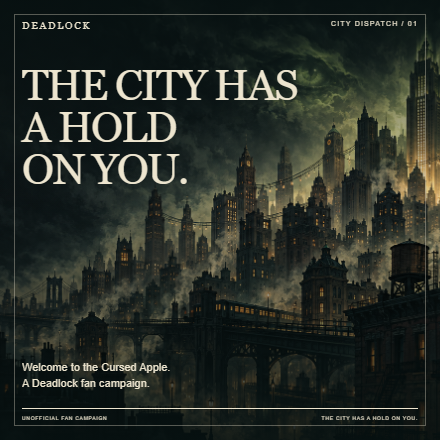
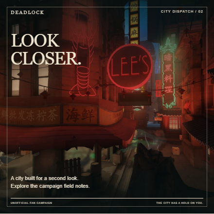
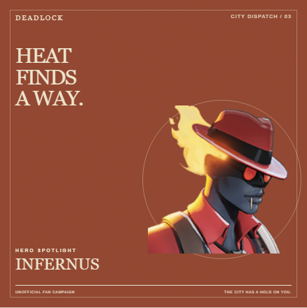
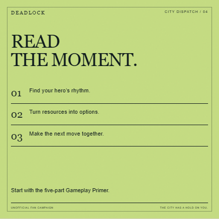
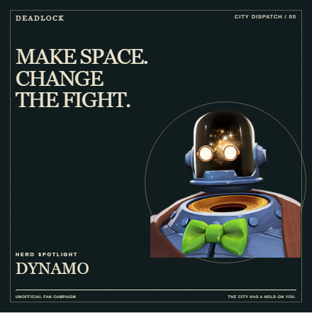
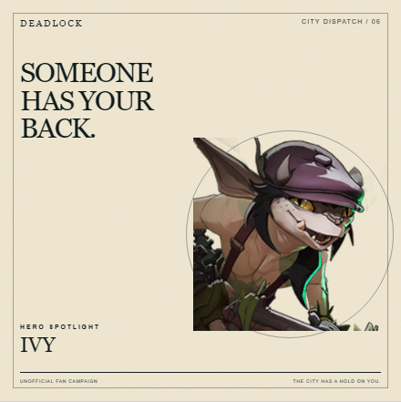
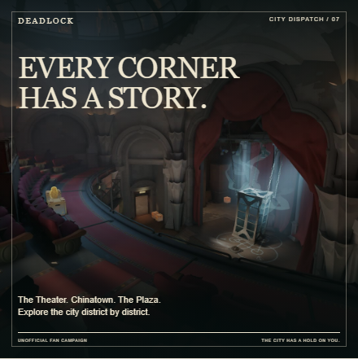
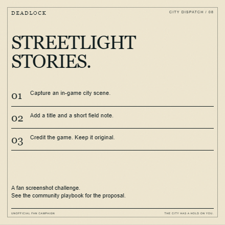
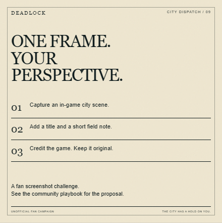
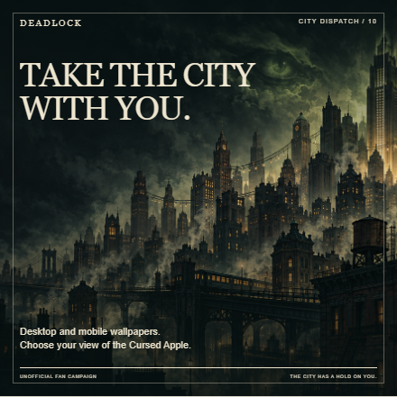
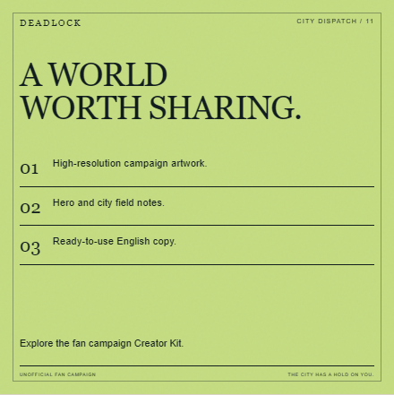
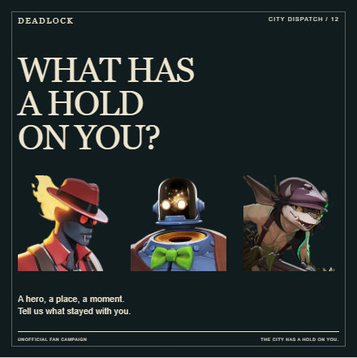